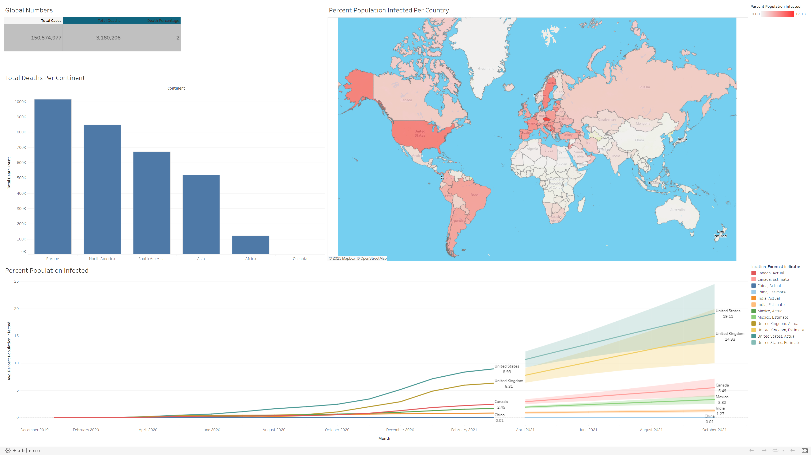

I am currently working on some personal projects to showcase my abilities in Python, SQL, Tableau, PowerBI, and Excel.
These Projects will be added to the website as I finish them.
This Website is a Work In Progress! You may find some generic or empty sections but they will be filled out soon!
Python
SQL
Excel
PowerBI
Tableau
R
Employed K-Means clustering, DBSCAN, and GMM algorithms to engineer investment portfolios that harmonize risk and return, showcasing an ability to apply advanced methodologies to real-world financial challenges.
Analyze five years of S&P 500 historical stock data by applying the Elbow Method, Silhouette Method, and Bayesian Information Criterion to identify optimal cluster counts and covariance types.
Constructed investment portfolios using insights from each clustering model, resulting in diversified stock selections tailored to different risk appetites.
Python

Using LSTM and RNN (WIP)

In this project, data analysis was performed on Covid-19 data from two datasets, CovidDeaths and CovidVaccinations. The datasets were joined to establish the relationship between population, vaccinations, and deaths.
To further analyze the data, various views and queries were created, with one such query aimed at identifying countries with the highest infection and death rates.
The data that was found using the SQL queries was then used to create a Tableau Dashboard to allow for an easier visualization of the data.
In addition, different techniques such as calculating percentages and cumulative sums were utilized. To help with the analysis, Common Table Expressions (CTEs) and temporary tables were also employed.
The data collected from those queries was used to create a Tableau Dashboard to gain further insight into the data.
Interactive visualizations were used to provide a comprehensive overview of Covid-19 data, including trend analysis, and geographical distributions across different countries.
Overall, this project involved the use of advanced data analysis techniques to gain insights into the Covid-19 pandemic.
SQL
Tableau
In this project, I developed SQL queries to identify and update missing property address data in a Nashville Housing dataset. I used functions like COALESCE, SUBSTRING_INDEX, and LOCATE to extract the relevant information from the dataset. I also separated the property and owner address data into individual columns using ALTER TABLE, UPDATE, and TRIM functions to enable easier analysis of the dataset.
To ensure data consistency, I updated inconsistent data values in the SoldAsVacant column using CASE and UPDATE functions. I also identified and deleted duplicate records using common table expressions (CTEs) and the DELETE function, which helped improve data accuracy and reliability.
Lastly, I utilized SQL queries to drop unused columns from the dataset using ALTER TABLE. This improved database performance and storage efficiency, by removing unnecessary data from the database.
SQL

Used Excel to clean data by removing duplicates, changing column formats, and adding columns to make data more usable.
Created pivot tables to make easy to read charts to display important information.
Created a dashboard with visualizations and slicers to gain additional insight into bike sales.
Excel

Dashboard created using Power BI for data analysis in the data field job market. Used PowerQuuery to clean the data for the dashboard.
Visualizations including average salary by title and country, total number of participants, average age of participants, preferred programming languages, and happiness with salary and work/life balance.
Provides comprehensive insights on compensation trends, demographics, and satisfaction levels in the data field, offering valuable information for decision-makers and stakeholders.
PowerBI
PowerQuery